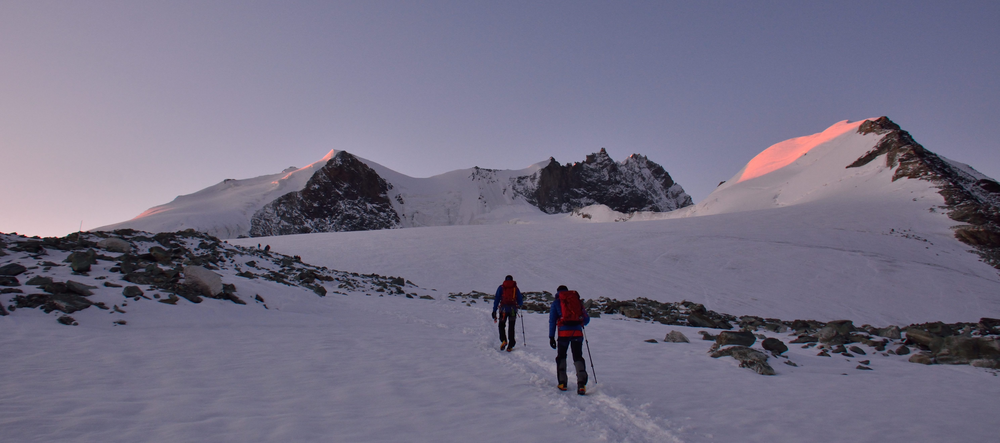

My name is Thomas Beck. I am a young physicit and computer scientist. I have always been intrigued and curious about how our surrounding Nature works. Curiosity is for me the driver to learn new things. Computer science is part of it and is one of the things that I discovered and learnt about out of curiosity.
I am passionate about learning and solving problems. This led me to complete a masters' degree in Physics at the Swiss Federal Institute of Technology (EPFL). This gave me the technical background as well as the methodology to approach many kind of problems with rigor and analysis.
I am passionate about mountain sports. As such, I regularly practice mountaineering, skiing, climbing, hiking and trail running.
